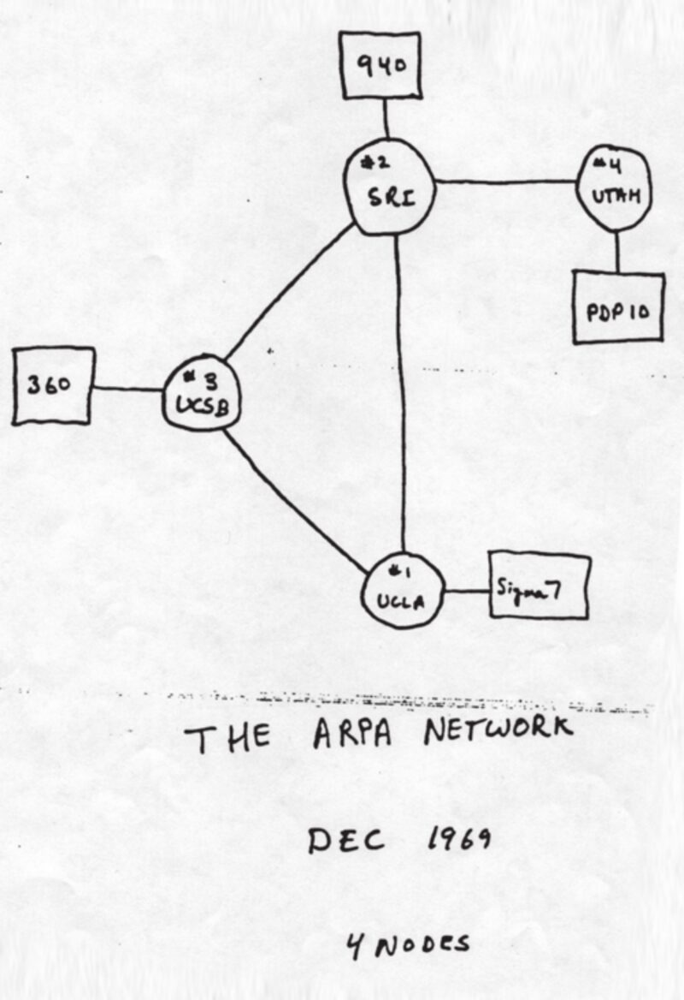

Historia de la circulaciónTecnología e Informática · Reto RED-1011-N-25
De ARPANET al feed
Sigue cuatro giros tecnológicos y descubre cómo cada uno cambió la forma en que la información viaja, se conecta y llega a otras personas.
Tu profesora lo verá en el código y en el reporte final.Escribe tu nombre para que tu profesora pueda identificarte en el reporte.
Explora, escucha, relaciona.Escucha cada hito, responde su pregunta y luego une cada cambio con la transformación social que causó. Después de cada acierto escribirás con tus palabras la causa y el efecto: tu profesora retroalimentará esas explicaciones escritas con la ayuda de la IA Tutor Feed.
Para estudiantes de 10.º y 11.º · Una experiencia breve para pensar antes de compartir.
De 1969 a hoyuna red que se vuelve cotidiana
¿Lo compartes?
Así se evalúa este recorrido
Criterio
Inicial
En proceso
Logrado
Sobresaliente
Comprensión
Necesita las dos pistas en casi todas las preguntas
Acierta con una pista en varias preguntas
Acierta la mayoría sin pistas
Acierta las 4 preguntas sin usar pistas
Análisis
No logra relacionar hitos con transformaciones
Relaciona con varios intentos
Relaciona las dos transformaciones correctamente
Las relaciona al primer intento
Aplicación
No completa la recomendación
Elige una estrategia pero sin justificarla bien
Elige una estrategia y la justifica correctamente
La justifica de forma clara, al primer intento
Argumentación
No conecta evidencia con su postura
Conecta evidencia parcialmente
Usa evidencia real de los hitos para defender su postura
Argumenta con precisión y sin contradicciones
Además, en cada hito, en la actividad de relaciones y en la recomendación escribes una explicación con tus palabras. Esas respuestas escritas no cambian la nota automática: tu profesora las retroalimenta con la skill Tutor Feed y decide su valoración.
Mapa de la ruta
La ruta de los cambios
Elige cualquier hito, en el orden que prefieras. Escucha o lee su explicación, responde la pregunta y vuelve aquí cuando quieras. El hito 01 trae un ejemplo ya resuelto, así que ábrelo primero si quieres ver cómo se conecta una causa con un efecto antes de razonar los demás.
HITO 01 / 04

Causaefecto
Así se razona
Mira este ejemplo simple. La causa es que ARPANET no tenía un computador central, todos los nodos eran iguales. El efecto es que si uno fallaba, la red seguía funcionando igual. Esa es la fórmula, busca qué pasó primero (la causa) y qué cambió después por eso (el efecto). Úsala para los otros tres hitos.
Escucha la idea central
Narración cortatambién puedes leer la transcripción
Transcripción
Comprueba tu idea: elige la opción que mejor explica la causa.
Explícalo con tus palabras
0 / 15 palabras
Escribe al menos 15 palabras y guárdala: así el hito queda explorado. Tu profesora leerá tu explicación y te dará retroalimentación.
Actividad final · Ahora conecta las piezas
Construye tu explicación
Relaciona cada transformación social con el hito que la causó. Puedes revisar los audios antes de responder.
Retroalimentación · Revisemos tu explicación
Resultado
Explícalo con tus palabras
0 / 15 palabras
Escribe al menos 15 palabras y guárdala para pasar a tu recomendación.
Producto final · Aplica lo que aprendiste
Diseña tu recomendación
Un colegio de Montería está decidiendo cómo manejar el uso del celular durante la jornada escolar y te pide una recomendación. Construye tu argumento arrastrando (o marcando y tocando) un bloque de cada color hacia su ranura.
EstrategiaArrastra o toca un bloque rosa
Porque… (justificación)Arrastra o toca un bloque azul
Evidencia que lo respaldaArrastra o toca un bloque lila
Toca un bloque de la banda para seleccionarlo y luego toca la ranura donde va, o arrástralo directamente si usas mouse.
Bloques disponibles
Explícalo con tus palabras
0 / 20 palabras
Escribe al menos 20 palabras y guárdala para ver el cierre.
¿No logras armarla? — tu nivel de desempeño se verá afectado.
Cierre · Tu lectura de la ruta
La información aprendió a moverse.
Tu evidencia de aprendizaje. Las dos relaciones que construiste
Tu producto final. La recomendación que diseñaste
Tu nivel de desempeño
—
—sobre 5.0 · escala de valoración de la Universidad
Código para tu docente
Muéstrale o dile este código a tu profesora: ella lo registrará en su panel para llevar el control del curso.
—Copiado.
Tus respuestas escritas
Tu profesora usará estos bloques con la skill Tutor Feed para darte retroalimentación y pistas. También aparecen en el reporte descargable.
La cadena, de 1969 a hoy
Idea central. Cada salto amplió el circuito.
La historia no es una escalera de inventos aislados. Es una cadena de causas y efectos.
ARPANET hizo más resistente el transporte de datos.
La Web hizo navegable ese espacio de documentos.
El internet móvil quitó el límite del lugar fijo.
Las plataformas sociales sumaron participación y velocidad.
Para tu próximo feed. Detente un segundo.
Cuando recibas o compartas un mensaje, pregúntate quién lo creó, qué evidencia tiene, qué contexto falta y por qué te aparece a ti.
¿Quién lo creó?
¿Qué evidencia tiene?
¿Qué contexto falta?
¿Por qué te aparece a ti?
Panel docente
Panel de la docente
Ingresa el código de acceso para ver el dashboard de desempeño del curso.
Dashboard de desempeño
Registra aquí el código corto que cada estudiante te muestra al terminar la ruta. El nivel y la nota se calculan automáticamente a partir del código; el nombre lo escribes tú.
Pegar respuestas del reporte
Opcional. Pega el texto que te envió el estudiante (su "Copiar todo" o lo copiado del reporte). El panel lo separa en bloques listos para pegar, uno por mensaje, en Tutor Feed.
Registro de desempeño
0 estudiantes registrados
Estudiante
Fecha
Nota
Nivel
Código
Acciones
Aún no hay estudiantes registrados en este equipo.
Guía docente · Retroalimentar con IA
Cómo retroalimentar con IA
Esta guía explica cómo usar la skill Tutor Feed con las explicaciones escritas de tus estudiantes. Los registros del curso siguen protegidos en el panel docente.
Créditos · Una experiencia educativa abierta
Gracias por recorrerla.
RED elaborado por Juan Sebastián Parra Noriega y Ana Vega, estudiantes de la Licenciatura en Informática y Medios Audiovisuales, Universidad de Córdoba (Montería), en el marco de la Actividad 1 del reto RED-1011-N-25.
Contenido
Historia general de ARPANET, la World Wide Web, el internet móvil y las plataformas sociales, adaptada para uso educativo.
Imágenes
"A sketch of the ARPANET in December 1969", de Wikimedia Commons, en dominio público (Public Domain Mark 1.0). "First Web Server.jpg", foto de Coolcaesar, de Wikimedia Commons, con licencia CC BY-SA 3.0 Unported. "Smartphone Use.jpg", de Wikimedia Commons, en dominio público (CC0). "ISPMESM,AurangabadWksp5.jpg" (2017), de la categoría Marathi Wikipedia Workshops in Maharashtra en Wikimedia Commons, con licencia CC BY-SA 4.0.
Accesibilidad
Transcripciones completas, foco visible, navegación por teclado, mensajes para lector de pantalla y estados que no dependen solo del color.
Licencia
Publicado bajo Creative Commons BY-SA.
Retroalimentar con la skill Tutor Feed
Tutor Feed es una Gem de Gemini hecha para este RED. Lee una respuesta escrita del estudiante y devuelve diagnóstico, retroalimentación y pistas graduales sin dar la respuesta. No pone notas.
Recibe las respuestas. El estudiante te entrega el reporte descargado o copia sus respuestas con "Copiar todo". Si te las pega en un mensaje, usa "Pegar respuestas del reporte" en este panel.
Abre Tutor Feed. Usa el botón "Abrir Tutor Feed": se abre en una pestaña nueva con tu cuenta de Google.
Pega un bloque por mensaje. Cada bloque trae el hito o parte, la pregunta, la respuesta, los criterios y el grado. Usa "Copiar para Tutor Feed" y envíalo tal cual.
Revisa y decide. Lee la nota para el docente y elige qué pistas entregar al estudiante, y en qué orden.
Tú valoras. La skill no califica: la valoración de las respuestas escritas la decides tú. La nota automática del RED solo mide las actividades de selección.
Ejemplo de bloque para pegar
Hito o parte: Hito 02 · La World Wide Web (1989)
Pregunta: ¿Cuál fue la causa de este hito y qué cambió en la forma de compartir información por eso?
Respuesta del estudiante: "La web hizo que cualquiera pudiera entrar a páginas con enlaces sin saber programar, entonces más gente empezó a leer y publicar cosas."
Criterios: por defecto
Grado: 11.º
Qué te devuelve la skill (resumen)
Tabla de diagnóstico por criterio: Comprensión, Análisis, Aplicación y Argumentación.
Retroalimentación sobre lo que la respuesta logra y lo que le falta.
Preguntas y pistas graduales que orientan sin dar la respuesta.
Pregunta de reflexión para el estudiante.
Nota para el docente con lo que conviene revisar en clase.
Casos de prueba de la skill (los del documento)
Son los dos mensajes con los que se probó Tutor Feed. Sirven para probar la skill en clase frente a la profesora: copia uno, pégalo en Tutor Feed y compara lo que responde con lo que se esperaba.